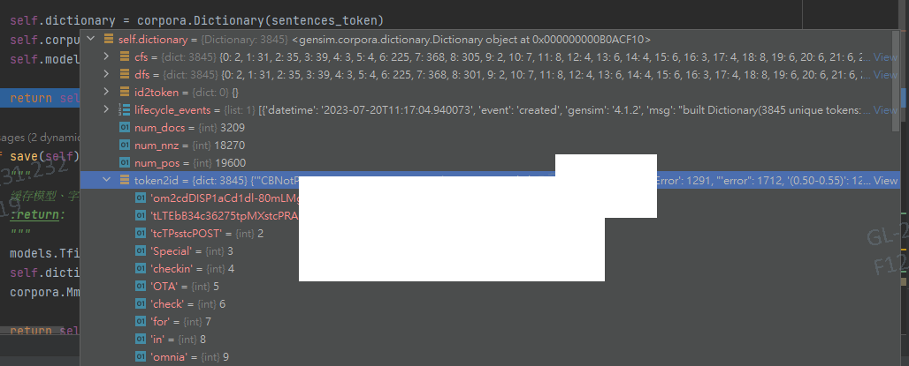
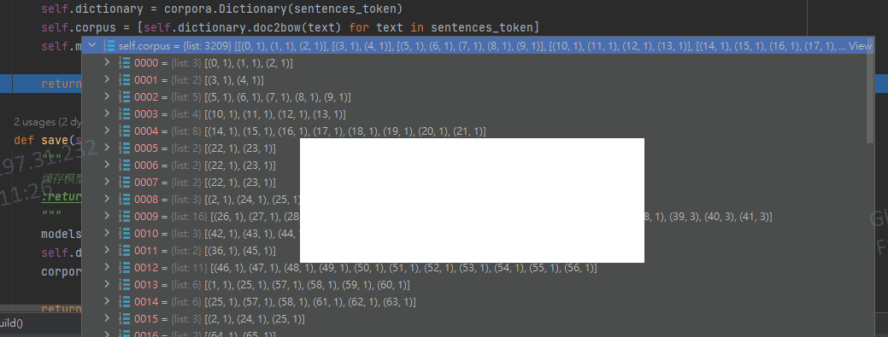

Gensim
概述
- Gensim的名字源自于"Generate Similar," 这个词是指Gensim可以用于生成类似的文本
- 提供了很多用于文本处理的工具，包括语料库处理、主题建模、文本相似度计算等
- 实现了许多流行的文本表示学习算法，如Word2Vec、FastText等
核心概念
- Corpus: Corpus是Gensim中用于存储文本语料库的数据结构，文档的集合
- Model: Model是Gensim中的基类，用于定义一些通用的模型方法
- Algm: Word2Vec、FastText是Gensim中用于文本表示学习的一种算法
代码阅读、调试
- Dictionary：corpora.Dictionary(sentences_token)
@ token2id：根据文档生成的 {token: id} 字典

- Corpus：[dictionary.doc2bow(text) for text in sentences_token]
@ doc2bow：统计在每个文章中每个token对应的 (id, times)，此处times为当前token在当前文章出现次数
# def doc2bow(self, document, allow_update=False, return_missing=False):
for w in document:
counter[w if isinstance(w, str) else str(w, 'utf-8')] += 1
result = {token2id[w]: freq for w, freq in counter.items() if w in token2id}

- Model（tf-idf）：models.TfidfModel(corpus)
@ dfs：根据corpus统计token在多少文章出现过（注意：不是token在文章出现过的次数）
for docno, bow in enumerate(corpus):
if docno % 10000 == 0:
logger.info("PROGRESS: processing document #%i", docno)
numnnz += len(bow)
for termid, _ in bow:
dfs[termid] = dfs.get(termid, 0) + 1 # 注意：不是token在文章出现过的次数
@ idfs：根据corpus统计每个token的词频权重生成 idfs，计算句子加权求和各token的idfs即可衡量相关性
使用
word2vec训练、预测
- 手写练习
Gensim训练、预测
- 手写练习
from gensim import corpora, models, similarities
class TF_IDF:
def __init__(self):
self.model = None # 模型,用于根据语料获取对应单词的IDF
self.corpus = [] # 语料,每篇文档对应的向量
self.dictionary = None # 字典,单词与编号之间的映射
def build(self, sentences_token):
"""
0000 = {list: 3} ['tcTPsstcPOST', 'tLTEbB34c36275tpMXstcPRAD', ...]
0001 = {list: 2} ['Special', 'checkin']
根据处理后文档信息初始化字典、语料、模型
:param sentences_token: 二维数组, 每行代表对应一个文档的单词列表
"""
self.dictionary = corpora.Dictionary(sentences_token)
self.corpus = [self.dictionary.doc2bow(text) for text in sentences_token]
self.model = models.TfidfModel(self.corpus)
return self
def save(self):
"""
缓存模型、字典、语料数据
:return:
"""
models.TfidfModel.save(self.model, 'tfidf') # 保存tfidf模型
self.dictionary.save('tfidf.dict')
corpora.MmCorpus.serialize('tfidf.corp', self.corpus)
return self
def load(self):
self.model = models.TfidfModel.load('tfidf')
self.dictionary = corpora.Dictionary.load('tfidf.dict')
self.corpus = corpora.MmCorpus('tfidf.corp')
return self
def similar(self, sentences):
# 将整个语料库转为tfidf表示方法
corpus_tfidf = self.model[self.corpus]
index = similarities.MatrixSimilarity(corpus_tfidf) # 关联矩阵,文章数*单词数
new_vecs = [self.dictionary.doc2bow(doc.split()) for doc in sentences]
new_vec_tfidf_ls = [self.model[new_vec] for new_vec in new_vecs] # 将要比较文档转换为tfidf表示方法
dictionary = self.corpus.Dictionary()
# documents = [self.dictionary.doc2bow(doc) for doc in self.corpus]
return [index[new_vec_tfidf] for new_vec_tfidf in new_vec_tfidf_ls]